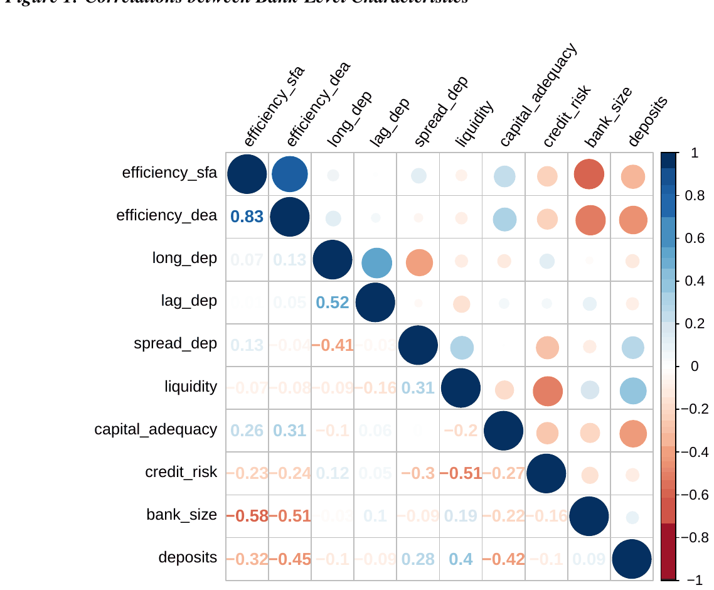

Abstract

The full text on this site is Czech National Bank Working Paper 9/2015, the openly available version. The article was published in Economic Modelling in 2016.
Reference: Tomas Havranek, Zuzana Irsova, Jitka Lesanovska (2016), "Bank efficiency and interest rate pass-through: Evidence from Czech loan products." Economic Modelling 54: 153-169. doi.org/10.1016/j.econmod.2016.01.004
How to cite
Tomas Havranek, Zuzana Irsova, Jitka Lesanovska (2016), "Bank efficiency and interest rate pass-through: Evidence from Czech loan products." Economic Modelling 54: 153-169. doi.org/10.1016/j.econmod.2016.01.004
BibTeX
@article{havranek2016passthrough,
author = {Tomas Havranek and Zuzana Irsova and Jitka Lesanovska},
title = {Bank efficiency and interest rate pass-through: Evidence from Czech loan products},
journal = {Economic Modelling},
volume = {54},
pages = {153--169},
year = {2016},
doi = {10.1016/j.econmod.2016.01.004},
}